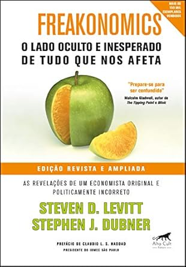

Economia
A seção Economia oferece uma seleção de livros essenciais para entender o mercado, a política econômica e os desafios globais do nosso tempo.
-
O Capital no Século XXI - Thomas Piketty

Piketty oferece uma análise profunda sobre a desigualdade de renda e a concentração de riqueza ao longo da história, propondo soluções para um mundo mais justo.
-
Economia na Palma da Mão - Joelmir Beting

Beting apresenta os conceitos econômicos de forma acessível e objetiva, explicando como eles impactam o nosso cotidiano.
-
Freakonomics - Steven Levitt e Stephen Dubner

Levitt e Dubner desvendam o lado oculto de diversos fenômenos da sociedade e como fatores econômicos influenciam nossas decisões diárias.
-
Capitalismo e Liberdade - Milton Friedman

Friedman defende a importância da liberdade econômica como pilar fundamental para a prosperidade e o progresso das sociedades.
-
A Riqueza das Nações - Adam Smith

Smith estabelece os princípios fundamentais da economia moderna, abordando a divisão do trabalho e os benefícios do mercado livre.
-
Por Que as Nações Fracassam - Daron Acemoglu e James Robinson

Este livro analisa as causas da desigualdade econômica mundial e como instituições políticas e econômicas moldam o destino das nações.
-
Economia Comportamental - Dan Ariely

Ariely explora como as decisões humanas são influenciadas por fatores irracionais, revelando o comportamento econômico por trás das escolhas cotidianas.
-
Pequeno Manual Antirracista - Djamila Ribeiro

Ribeiro apresenta uma análise crítica sobre o racismo estrutural e seu impacto econômico e social, além de sugerir caminhos para combater a discriminação.
-
Os Donos do Poder - Raymundo Faoro

Faoro examina a formação das elites no Brasil, discutindo o poder político e econômico e suas consequências para o desenvolvimento do país.
-
Globalização e seus Descontentes - Joseph Stiglitz

Stiglitz critica as políticas econômicas globais e como a globalização tem levado a disparidades de riqueza e a crescente desigualdade social.